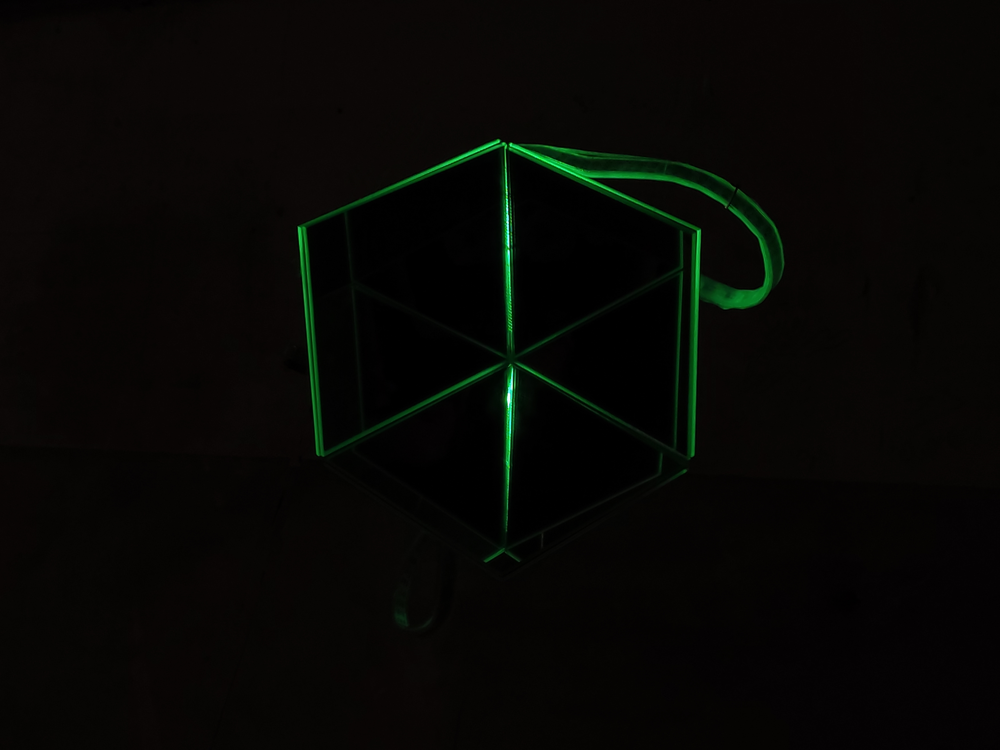

2022 - I light U
You are not always able to bring everything you call home with you where ever you go. It would be nice if you could put everything you call home inside a box, put it in backpack and take it with you. This small mechanism is breaking and bending the outside world in- to fractions placing your home (you) into your own little imitation of your home. An imitation because nothing can make you feel more at home than home.
But in a time of homesickness this mechanism will give you just a little fraction of familiarity in the out- side world. This mechanism gives you a sudden and small encounter with your own home, but this is not your home, it’s just a familiarity.